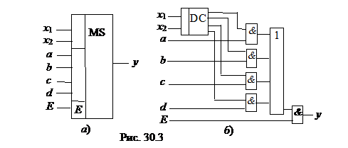

3. МУЛЬТИПЛЕКСОР
Мультиплексор (МS) - это
функциональный узел, осуществляющий подключение (коммутацию) одного из нескольких входов к выходу у. На выход такого устройства передаётся
логический уровень того информационного разряда, номер которого в двоичном коде
задан на адресных входах х1 и х2. Условное изображение мультиплексора на четыре
входа и возможный вариант его структурной схемы показаны на рис. 30.3, а и б.

При х1 = 0 и х2 = 0, у = а;
при х1 = 0 и х2 = 1, у = b; при х1 = 1 и х2
= 0, у = c и при х1
= 1 и х2 = 1, у = d.
Функционирование мультиплексора описывается выражением
Вход Е – разрешающий: при Е = 1 мультиплексор работает как обычно, при Е = 0 выход узла находится в неактивном состоянии, мультиплексор заперт. Серийные узлы выпускаются с числом адресных входов п = 2, 3 и 4 при возможном числе 2п коммутируемых входов. При необходимости коммутировать большее количество входов используют несколько мультиплексоров. Мультиплексоры находят широкое применение в устройствах отображения информации в различных устройствах управления.
Так как мультиплексор может пропустить на выход сигнал с любого информационного входа, адрес которого установлен на соответствующих адресных входах, то на основе мультиплексоров реализуют логические функции, подавая на информационные входы логические 1 или 0 в соответствии с таблицей переключений, а на адресные входы – аргументы функции.